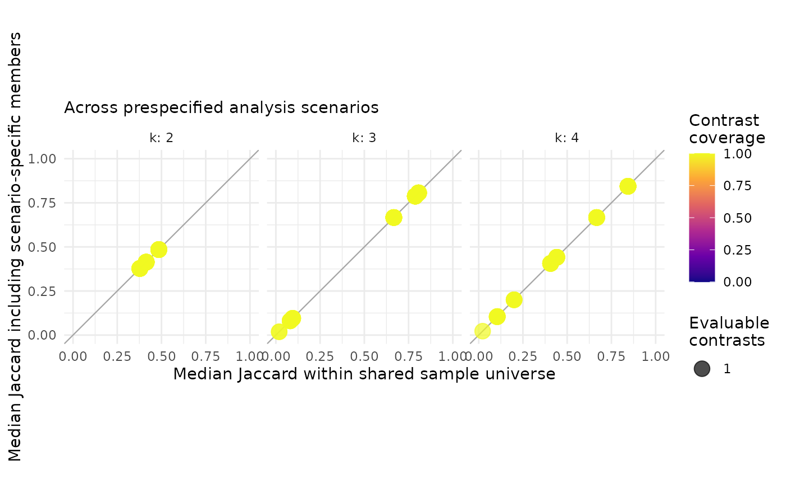

Auditing a SOM ensemble without forcing classes
Shaowen Ye
Source:vignettes/getting-started.Rmd
getting-started.RmdThe question comes before the class map
A self-organizing map can preserve an environmental gradient even
when a hard partition of its units is not reproducible.
SOMevidence therefore keeps four tasks separate:
- represent multivariate structure;
- audit mapping and topology;
- test candidate partitions across an ensemble; and
- make a conditional decision using requirements specified for the study.
The example uses simulated clusters so that the data-generating structure is known. Real data never provide this kind of ground truth by default.
library(SOMevidence)
set.seed(1)
dat <- simulate_som_scenario(
"clusters", n = 90, p = 6, seed = 10,
id = paste0("example_", seq_len(90))
)
dat
#> <som_data>
#> samples: 90
#> layers : 1
#> id source: provided
#> - environment: 6 variables, 0.0% missing
#> design : external_labelThe simulated class label is stored only in metadata. It is not part of the SOM input and is not used below.
Preserve the sampling design
Rows are subsampled here because they are independent by
construction. For field surveys, group_subsample,
block_subsample or leave_domain_out should be
used when sites, transects, individuals, years or campaigns define the
independent unit.
resamples <- som_resamples(
dat,
method = "subsample",
repeats = 3,
prop = 0.8,
seed = 20
)
spec <- som_spec(
grids = list(c(3, 2), c(4, 3)),
seeds = c(30, 31),
rlen = 40,
k = 2:4
)This creates 12 attempted models: three resamples, two grids and two random initializations. Every transformation, mean and standard deviation is learned from the analysis rows of its own split.
ensemble <- fit_som_ensemble(
dat,
spec,
resamples,
preprocess = som_preprocess("identity", center = TRUE, scale = TRUE)
)
ensemble
#> <som_ensemble>
#> attempted: 12
#> succeeded: 12
#> failed : 0
#> warnings : 0
#> samples : 90Audit representation and partitions separately
audit <- audit_som(ensemble)
audit
#> <som_audit>
#> successful fits: 12
#> success rate : 100.0%
#> grids audited : 2
audit$grid_summary
#> grid xdim ydim n_fits median_quantization_error median_topographic_error
#> 1 3 x 2 3 2 6 3.344689 0.2222222
#> 2 4 x 3 4 3 6 2.257257 0.2916667
#> median_empty_unit_rate
#> 1 0
#> 2 0
successful_ids <- vapply(
Filter(function(fit) isTRUE(fit$success), ensemble$fits),
`[[`, character(1), "id"
)
representation <- audit_som_representation(
ensemble,
pairs = data.frame(
fit_a = successful_ids[[1]],
fit_b = successful_ids[[2]]
),
neighbourhood_size = 8
)
representation$pairwise
#> fit_a fit_b split_a
#> 1 subsample_001__g01_3x2_s30 subsample_001__g01_3x2_s31 subsample_001
#> split_b grid_a grid_b same_split same_grid scope n_common_design
#> 1 subsample_001 1 1 TRUE TRUE analysis 72
#> n_common_mapped joint_mapping_coverage n_sample_pairs
#> 1 72 1 2556
#> distance_rank_correlation correlation_status neighbourhood_size
#> 1 0.2835417 computed 8
#> median_neighbourhood_jaccard neighbourhood_jaccard_q025
#> 1 0.4 0
#> neighbourhood_jaccard_q975 median_neighbourhood_size_a
#> 1 0.6923077 11
#> median_neighbourhood_size_b neighbourhood_status
#> 1 15 computed
partitions <- partition_som(ensemble)
partitions
#> <som_partitions>
#> fitted partitions : 36
#> candidate k : 2, 3, 4
#> evidence scope : analysis
#> pairwise contrasts: 198
#> agreement metric : adjusted Rand index (not accuracy)
partitions$stability
#> k scope n_pairs n_partitions n_complete_partitions min_observed_clusters
#> 1 2 analysis 66 12 12 2
#> 2 3 analysis 66 12 12 3
#> 3 4 analysis 66 12 12 4
#> n_pairs_evaluable median_joint_n median_joint_coverage median_ari ari_q025
#> 1 66 58 0.6444444 0.07904953 -0.07647454
#> 2 66 58 0.6444444 0.31457897 0.09074610
#> 3 66 58 0.6444444 0.37472852 0.17858978
#> ari_q975 median_ami ami_q025 ami_q975
#> 1 0.7889482 0.1553512 -0.02331763 0.6984239
#> 2 0.6778272 0.3365075 0.18565508 0.6814412
#> 3 0.6634369 0.4193496 0.21635376 0.6839617
consensus <- consensus_som(partitions, k = 3)
consensus
#> <som_consensus>
#> k : 3
#> method : aligned_vote
#> evidence scope : analysis
#> partitions : 12
#> samples : 90
#> assigned at least once: 90
#> assignment coverage: 1.000
#> consensus coverage : 1.000
#> consensus clusters : 3 / 3
#> replicated coverage: 1.000
#> median support : 0.750
#> median entropy : 0.512
consensus$cluster_summary
#> cluster median_jaccard jaccard_q025 jaccard_q975
#> 1 1 0.5872865 0.3636364 0.9565217
#> 2 2 0.7198276 0.6129032 0.8928571
#> 3 3 0.5415282 0.1481481 0.8400000
references <- fit_cross_models(
ensemble,
methods = c("kmeans", "ward"),
k = 2:4
)
comparison <- compare_cross_models(partitions, references)
comparison$summary
#> scope method k n_comparisons median_ari ari_q025 ari_q975 median_ami
#> 1 analysis kmeans 2 12 0.10169656 -0.03559160 0.7866490 0.21113188
#> 2 analysis ward 2 12 0.01616664 -0.06841977 0.7859206 0.08871479
#> 3 analysis kmeans 3 12 0.45990535 0.16323005 0.7968555 0.49353972
#> 4 analysis ward 3 12 0.41651517 0.09642750 0.6863293 0.43204196
#> 5 analysis kmeans 4 12 0.54891660 0.19152957 0.7251709 0.60803282
#> 6 analysis ward 4 12 0.35888232 0.18877108 0.6942901 0.47017371
#> ami_q025 ami_q975
#> 1 0.018744451 0.6750548
#> 2 0.001240258 0.7254310
#> 3 0.225046520 0.7683738
#> 4 0.181682547 0.6971771
#> 5 0.236738852 0.7331537
#> 6 0.289493696 0.7055366Quantization error, topographic error and empty-unit rate describe different properties of each representation. The experimental cross-fit audit describes whether prespecified maps preserve similar sample topology; it supplies no ranking or automatic selection. ARI describes agreement between partitions; it is not classification accuracy and it does not establish ecological truth.
Pareto selection retains candidates that are not dominated across the stated criteria. It does not collapse the evidence into a weighted score or a model leaderboard. Because the fitted ensemble uses distinct resamples, fit-level metrics are not compared directly. Configuration summaries must cover the same successful resamples and random starts. All planned fits succeeded in this worked example before the grid-level medians are compared.
stopifnot(audit$success_rate == 1)
pareto_candidates(
audit$grid_summary,
metrics = c(
median_quantization_error = "min",
median_topographic_error = "min",
median_empty_unit_rate = "min"
)
)
#> grid xdim ydim n_fits median_quantization_error median_topographic_error
#> 1 3 x 2 3 2 6 3.344689 0.2222222
#> 2 4 x 3 4 3 6 2.257257 0.2916667
#> median_empty_unit_rate pareto
#> 1 0 TRUE
#> 2 0 TRUEA conclusion may be withheld
Without a prespecified gate, the package reports that defensibility has not been assessed.
assess_defensibility(audit, partitions, k = 3)
#> <som_defensibility>
#> status: not_assessed
#> k : 3The following thresholds are deliberately permissive and serve only to show the interface. They are not package defaults or general ecological standards.
illustrative_gate <- som_gate(
max_topographic_error = 0.5,
max_empty_unit_rate = 0.5,
min_median_ari = 0.2,
min_success_rate = 0.95
)
assess_defensibility(
audit,
partitions,
k = 3,
gate = illustrative_gate,
consensus = consensus,
cross_model = comparison
)
#> <som_defensibility>
#> status: supported
#> k : 3
#> - all_cross_model_fits_succeeded: observed=1, threshold=1, pass
#> - consensus_observes_k: observed=3, threshold=3, pass
#> - comparative_partition_evidence_available: observed=1, threshold=1, pass
#> - partition_quality_requirement_specified: observed=1, threshold=1, pass
#> - all_partitions_observe_k: observed=1, threshold=1, pass
#> - max_topographic_error: observed=0.264, threshold=0.5, pass
#> - max_empty_unit_rate: observed=0, threshold=0.5, pass
#> - min_median_ari: observed=0.315, threshold=0.2, pass
#> - min_success_rate: observed=1, threshold=0.95, passA failed requirement yields "abstain"; unavailable
evidence yields "uncertain". Passing an analyst-defined
gate supports only the stated partition under the stated analysis
design. It does not convert an unsupervised partition into a verified
ecological type.
Because this simulation has known labels that were excluded from training, we can compare them after the workflow. Real ecological categories should not be treated as ground truth merely because they are available.
evaluate_external_labels(consensus)
#> <som_external_assessment> (post hoc)
#> samples used: 90 of 90
#> label match : stored
#> ARI : 0.680
#> AMI : 0.676
#> interpretation: agreement, not classification accuracyGoverned real-data examples
open_data_registry() lists versioned datasets selected
for distinct purposes in ecology, environmental monitoring and
evolution. The package never downloads these data during installation or
examples.
open_data_registry()[, c("id", "domain", "role", "license")]
#> id domain role
#> 1 palmer_penguins evolution quickstart
#> 2 zirbel_prairie ecology advanced_example
#> 3 cestes ecology benchmark
#> 4 nla_2022 environment advanced_example
#> 5 ant_ecomorph evolution validation
#> 6 avonet evolution scale_validation
#> license
#> 1 CC0-1.0
#> 2 CC0-1.0
#> 3 CC0-1.0
#> 4 No explicit licence in DOI metadata
#> 5 CC0-1.0
#> 6 CC BY 4.0Compare prespecified analysis choices on shared samples
run_som_sensitivity() retains each evidence stream
separately and also compares scenario consensus labels on shared sample
identifiers. A sample enters this comparison only when at least two
ensemble members assigned it in both scenarios. The resulting ARI and
AMI describe sensitivity to the stated analysis choice; they are not
accuracy measures. A second table asks whether the set of observations
clustered with each focal sample persists across the same scenarios. The
shared-universe Jaccard isolates changes in the partition among jointly
evaluable samples. The all-members Jaccard also includes eligible
members found in only one scenario, so it combines coverage and
repartitioning effects. Both are label-invariant, require at least two
jointly evaluable samples and need no preferred reference scenario.
sensitivity <- run_som_sensitivity(
list(
standardized = list(data = dat, spec = spec),
unscaled = list(
data = dat,
spec = spec,
preprocess = som_preprocess(center = FALSE, scale = FALSE)
)
),
cross_models = "ward",
keep_workflows = FALSE
)
sensitivity$scenario_comparison
#> scenario_a scenario_b k n_shared n_replicated_a n_replicated_b n_joint
#> 1 standardized unscaled 2 90 90 90 90
#> 2 standardized unscaled 3 90 90 90 90
#> 3 standardized unscaled 4 90 90 90 90
#> joint_coverage ari ami comparison_status
#> 1 1 0.03442554 0.2249457 evaluated
#> 2 1 0.60479379 0.6039247 evaluated
#> 3 1 0.57210525 0.6221588 evaluated
head(sensitivity$sample_summary)
#> k sample_id n_scenarios n_contrasts n_comparable_contrasts
#> 1 2 example_1 2 1 1
#> 2 2 example_10 2 1 1
#> 3 2 example_11 2 1 1
#> 4 2 example_12 2 1 1
#> 5 2 example_13 2 1 1
#> 6 2 example_14 2 1 1
#> n_possible_contrasts contrast_coverage conditional_contrast_coverage
#> 1 1 1 1
#> 2 1 1 1
#> 3 1 1 1
#> 4 1 1 1
#> 5 1 1 1
#> 6 1 1 1
#> median_membership_jaccard_shared membership_jaccard_shared_q025
#> 1 0.4848485 0.4848485
#> 2 0.4137931 0.4137931
#> 3 0.3777778 0.3777778
#> 4 0.3777778 0.3777778
#> 5 0.4137931 0.4137931
#> 6 0.3777778 0.3777778
#> membership_jaccard_shared_q975 min_membership_jaccard_shared
#> 1 0.4848485 0.4848485
#> 2 0.4137931 0.4137931
#> 3 0.3777778 0.3777778
#> 4 0.3777778 0.3777778
#> 5 0.4137931 0.4137931
#> 6 0.3777778 0.3777778
#> median_membership_jaccard_all membership_jaccard_all_q025
#> 1 0.4848485 0.4848485
#> 2 0.4137931 0.4137931
#> 3 0.3777778 0.3777778
#> 4 0.3777778 0.3777778
#> 5 0.4137931 0.4137931
#> 6 0.3777778 0.3777778
#> membership_jaccard_all_q975 min_membership_jaccard_all median_joint_n
#> 1 0.4848485 0.4848485 90
#> 2 0.4137931 0.4137931 90
#> 3 0.3777778 0.3777778 90
#> 4 0.3777778 0.3777778 90
#> 5 0.4137931 0.4137931 90
#> 6 0.3777778 0.3777778 90
plot(sensitivity)
sample_summary keeps the number and coverage of
evaluable contrasts beside both Jaccard summaries.
contrast_coverage uses all prespecified scenario pairs that
requested the candidate k;
conditional_contrast_coverage uses only pairs for which
global ARI/AMI were evaluable. Low coverage is missing evidence, not
stable membership. Likewise, a large value is conditional on the
prespecified scenarios and must not be interpreted as a probability that
the assignment is correct. Set sample_profiles = FALSE when
only global scenario comparisons are needed for a very large
scenario-by-sample design.
When scenarios contain different feature sets, row subsets or
reordered observations, supply stable id values (or
explicit non-positional row names) to som_data(). Locally
generated row numbers are not accepted as evidence that observations
match across different data objects. For any legacy
som_data object without id_source, rebuild the
object with som_data(..., id = old$metadata$id) to confirm
that those identifiers are intentional before comparing scenarios.